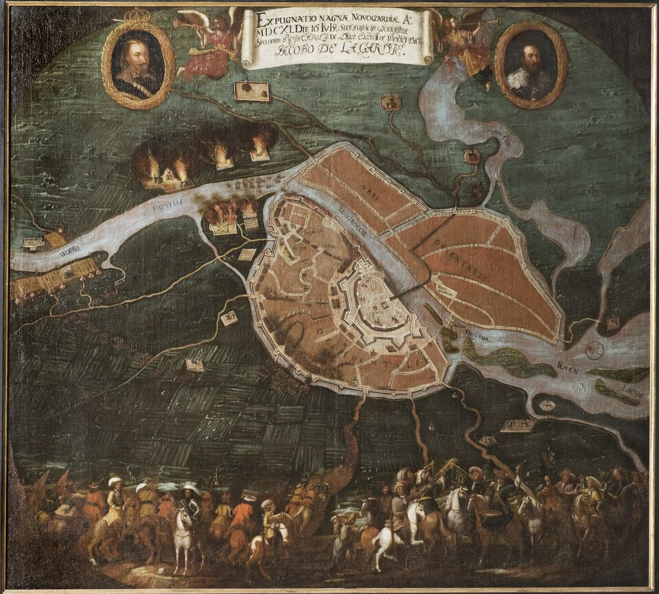

Русско-шведская война 1610-1617 годов
Во время Смуты в России избранный царь Василий Шуйский вёл борьбу за престол со своим оппонентом Лжедмитрием II. Для этого он вступил в союз со Швецией, которая в это время воевала с Польшей по династическим причинам. Шуйский пообещал отдать крепость Корела Карлу IX за оказанную помощь в борьбе с Лжедмитрием II. Ссылаясь на этот союз, польский король шведского происхождения Сигизмунд III объявил войну Москве. Во время Клушинской битвы в июне 1610 года поляки разбили русско-шведскую армию, уничтожив немалую часть русских войск и захватив в плен шведских наёмников. После этого летом 1610 года отряд шведских и французских наёмников под командованием Пьера Делавиля захватил русскую крепость Ладогу. Делавиль уверял русских, что представляет интересы русского царя Василия Шуйского, против которого восстали его подданные. В феврале 1611 года три тысячи русских воинов под командованием воеводы И. М. Салтыкова и князя Г. К. Волконского осадили Ладогу. Делавилю было предложено уйти из неё в обмен на пленников, среди которых был его брат, и в итоге он согласился сдаться на почётных условиях. В 1611 году, воспользовавшись тем, что между Речью Посполитой и Швецией было заключено в апреле перемирие на 10 месяцев, наёмники (французы-гугеноты, шотландские и голландские пресвитериане под командованием молодых шведских полковников Горна и де Ла Гарди [Делагарди]), не получив обещанной царем Шуйским (которого уже свергли в Москве 29 июля 1610 года) платы за свои услуги, начинают самостоятельно захватывать новгородские земли — были взяты штурмом русские пограничные крепости Корела, Ям, Ивангород, Копорье и Гдов. 16 июля 1611 года Новгород был атакован войском наёмников. Из-за неразберихи и отхода московского воеводы Бутурлина со своим отрядом, город оказался быстро захвачен — началась шестилетняя оккупация Новгорода. Делагарди предложил королю Швеции Карлу IX попытаться посадить на русский трон одного из его сыновей — десятилетнего Карла Филиппа.

25 июля 1611 года между марионеточным оккупированным шведами Новгородским государством и шведским королём был подписан договор, согласно которому шведский король объявлялся покровителем независимого Новгородского государства, а один из его сыновей (королевич Карл Филипп) становился претендентом на царский трон и Новгородским великим князем. Таким образом, бо́льшая часть Новгородской земли стала формально независимым Новгородским государством, находящимся под шведским протекторатом, хоть по сути это и являлось военной оккупацией. Во главе его находились с русской стороны Иван Никитич Большой Одоевский, со стороны шведского короля — Якоб Делагарди. От их имени издавались указы и производилась раздача земель в поместья принявшим новую новгородскую власть служилым людям. В октябре после пятинедельной осады провалилась первая попытка шведов взять Псков. Однако в конце 1612 года после шестимесячной осады шведы смогли взять Ивангород. После созыва в Москве Земского Собора и выбора им в 1613 году нового русского царя Михаила Романова политика оккупационной администрации изменилась. Во время отсутствия Делагарди зимой 1614—1615 годов военную администрацию в Новгороде возглавил фельдмаршал Эверт Горн, который повёл жёсткую политику на присоединение новгородских земель к Швеции, объявив, что новый король Густав Адольф сам желает быть королём в Новгороде. Такое заявление не приняли многие новгородцы; перейдя на сторону Москвы, они стали выезжать из Новгородского государства. В 1613 году шведские наёмники подошли к Тихвину и безуспешно осаждали город. Осенью 1613 года из Москвы в поход к Новгороду, захваченному наёмниками в 1611 году, выступило войско боярина князя Д. Т. Трубецкого, в составе которого первоначально было 1045 казаков. В Торжке, где Трубецкой оставался несколько месяцев, войско пополнилось. Между дворянской частью войска и казаками, а также между различными группами казаков происходили острые столкновения. В начале 1614 года многие казачьи отряды, по-видимому, давно не получавшие жалованья, вышли из-под контроля царских воевод. В феврале шведы неудачно осадили Псково-Печерский монастырь, однако в июле смогли нанести Трубецкому поражение под Бронницей, после чего захватили Гдов. Также в 1614 году произошла битва при Ристилахти, которая окончилась отступлением и шведских и русских войск. На следующий год шведские наёмники вновь осадили Псков, но псковичи отбили ожесточённый штурм, при этом застрелив молодого шведского фельдмаршала Эверта Горна на глазах шведского короля. В результате провалившейся осады шведы с позором отошли от Пскова. В 1616 году они продолжили закрепляться на удерживаемых ими землях, а осенью предприняли новую попытку взять Псков, страдавший от нехватки продовольствия. Поход на Псков возглавил фельдмаршал Карл Юлленъельм, однако на сей раз шведам не удалось даже закрепиться в Снетогорском монастыре под Псковом, служившим им опорным пунктом в предыдущем году. Отойдя на несколько километров к устью Великой, они построили там крепкий шанец. Однако уже сами псковичи осадили их в данном шанце и добились их капитуляции. В 1617 году был заключен Столбовский мир, по условиям которого Россия теряла выход к Балтийскому морю, но города Новгород, Порхов, Старая Русса, Ладога и Гдов были ей возвращены. В результате войны Россия на 100 лет лишилась крепостей: Корела, Ям, Ивангород, Орешек, Копорье и выхода к Балтийскому морю.